BROOKLYN
1.
The subway,bus and the trolley were only a thin dime to ride, and if you are
really old, you'll remember a nickel a ride.
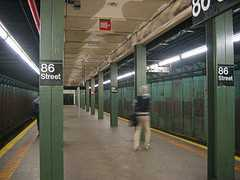
2.
Schools were the showcase for the whole country.
3.
Tuesday night was fireworks night in Coney Island put on by Schaefer Brewing.
4.
There was very little pornography.
5.
There were the bath houses: Stauches, Bushman Baths,
Steeplechase
Baths,
Washington Baths, Ravenhall, and Brighton Beach Baths.
6.
There was respect for teachers and older people in general.
7.
There was almost no violence.
8.
The theme of the music of the times, even when it became rock and roll,
was love not anger.
9.
A great day was going to the beach at Coney Island, 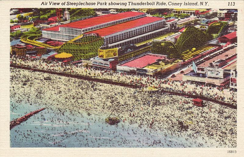
or
Brighton.
10.
People made a living and, rich or poor, people all knew how to have a good time
no matter of status.
11.
There was no better hot dog than the original at Nathan's in Coney Island And no
better French fries than the Nathan's thick ripple cuts.
12.
There were few divorces
and few "one parent" families.
13.
There were no drugs or drug problems in the lives of most
people.
14. The rides and shows of Coney Island were fantastic:
Steeplechase Park
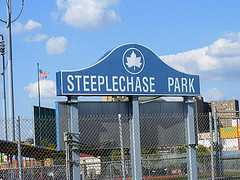
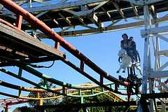:
the horses, the big slide, the barrels, the zoo (maze), the
human
pool table, the Cyclone Roller Coaster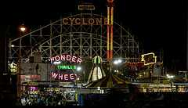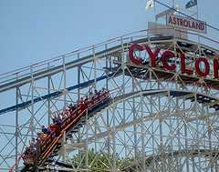, the Tornado
Roller Coaster, the Thunderbolt Roller Coaster, the Bobsled, the Virginia Reel,
the Wonder
Wheel, the Bumper cars, the Tunnel of love, Battaway, the
loop the loop,
the bubble bounce, miniature golf, the whip, the many
merry-go-rounds,
the penny arcades. Luna Park, the Thompson Roller
Coaster, the Parachute jump, 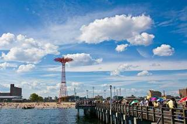Fabers
Sportsland and Fascination, toffee and cotton candy stores, custard stands,
Pokerama, Skeeball,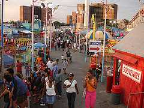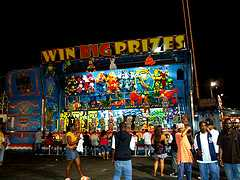 prize games,
fortune tellers guess games, hammer games, the Harlem revue, the freak shows,
the house of wax, the animal nursery,restaurants, rifle
ranges, push
cart rides and parades.
15. The fruit man, the tool sharpener,
the junk man and the watermelon man all with the horse and
wagon
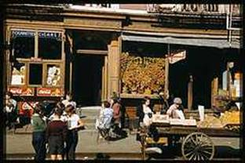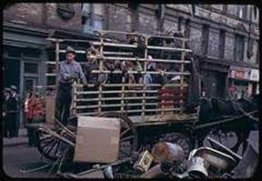
16. Sheepshead Bay was Lundy's Restaurant and
fishing.
17. Only place for pizza and only whole pizzas was Joe's
Bar and Grill on Ave U. Then in the mid-50's, a pizza explosion: you could buy
it by the slice for a dime at many places. By the late 50's it was a whole 15
cents a slice! A tuna fish sandwich or a BLT were 45 cents. A small Coke was 7
cents, a large Coke was 12 cents. Remember Vanilla Cokes when they pumped real
vanilla syrup into the glass before adding the Coke?
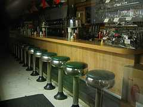
18. There were many theaters where every Saturday
afternoon you could see 25 cartoons and two feature films. The Highway,
the Avalon, the Kingsway, the Mayfair, the Claridge, the Tuxedo, the Oceana, the
Oriental, the Avenue U,the Kent, the Paramount, the RKO Tilyou, the
Mermaid, the Surf, the Walker, the Albemarle, the Alpine, the Rugby, the
Ambassador, the People's Cinema, the Canarsie, the Marlboro, the Avon and the
Globe.
19 Everybody knew all the high schools in Brooklyn.
20. Big eating and coffee hangouts: Dubrow's on Kings Highway,
also on Eastern Parkway/Utica Avenue, Famous on 86th Street, and Garfield's
onFlatbush Avenue.
21. Ebinger's was the great bakery .
loved the chocolate butter cream
with the almonds on the side, Boston
Cream pie, and the Blackout cakes!
Bierman's was terrific also.
22. Kings Highway stores had their own ornate glitz as far as
style goes.
23 There were many delicatessens in the 50's -- very
few today. The best? Adelman's on 13th Avenue and Hymie's on Sutter Avenue.. The
food was from heaven! 

24. Big night clubs in Brooklyn were the Ben Maksiks'
"Town and Country" on Flatbush Avenue and "The Elegante' " on Ocean Parkway.
25. There were no fast food restaurants in the 50's and a
hamburger tasted like a hamburger.
26. There was Murray the K,
rock and roll concerts at the Brooklyn Fox and the Brooklyn Paramount. You had
to go the night before to get good seats.
27. Quick bites at
Brennan and Carr, Horn and Hardart Automat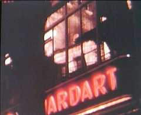, Nedick's,
Big Daddy's, Chock Full o' Nuts, Junior's, Grabsteins or Joe's
Delicatessen. Junior's, you'll be glad to know, is still in the same
place, and the cheesecake is still fabulous.)
28. Knishes were
great at Mrs. Stahl's in Brighton or at Shatzkin's Knishes. Remember the knish
guy on the beach with the shopping bags?
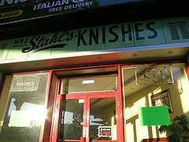Mrs.
Stahl's Knishes is Now a Subway
29.
People in Brooklyn took pride in owning a Chevy in the 50's; there was nothing
better than General Motors then. The cars would run and run and run, no
problems.
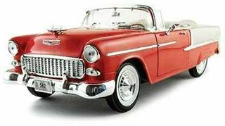
30. You
bought sour pickles right out of the barrel -- for a nickel -- and they were
delicious. By the 60's, they cost a whole quarter.
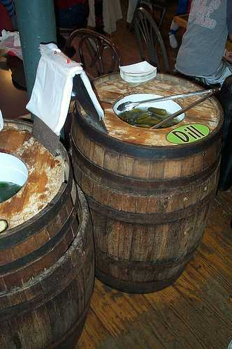
Anyone
remember Miller's Appetizing, on the corner of 13th Avenue and 50th Street?
31. The Brooklyn Dodgers were part of your family. 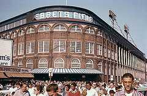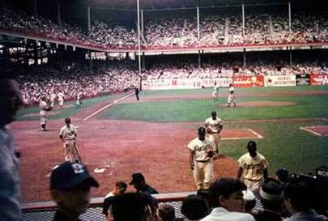
The
Duke, the Scoonge, Pee Wee, Jackie, the Preacher, Campy, Junior, Clem, Big
Don, Gil. They were always in a lot of our conversations. Remember Ebbet's
Field and Happy Felton's Knothole club? For a nickel, you got into Ebbet's Field
and saw the Dodgers play. For Brooklynites it was -- and will always be -- a
shrine.
32.
You come from Brooklyn but you don't think you have an accent. To you Long
Island is one word which sounds like "Longuyland."
33. You played
a lot of games as kids. Depending on whether you were a boy or a girl, you could
play: ringaleaveo, Johnny on t he Pony, Hide and Seek, three feet off to
Germany, red light-green light, chase the white horse, kick the can, Buck, Buck,
how many horns are up?, war, hit the penny, pussy-in-the-corner, jump rope,
double-dutch, Stories, A-My
Name Is, box ball,stick ball, box
baseball, catch a fly, dodge ball, stoop ball, you're up, running bases, iron
tag, skelly, tops, punch ball, handball, slap ball, whiffle ball,stick ball,
poison ball, relay races, softball, baseball, basketball, horse, 5-3-1, around
the world, foul shooting, knockout, arm wrestling,
Indianwrestling.
And then there were card games like canasta, casino, hearts, pinochle, war and
the unhappy game of 52-card pickup.
34. You hung out on people's
stoops or in the Courtyard.
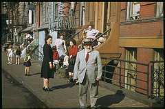
35. You learned how to dance at some girl's backyard or
house
36. You roller skated at Park Circle or Empire Blvd. skating rinks
in skates with wooden wheels. You had roller skates at home with metal wheels
for using on the sidewalks, and you needed a skate key to tighten
them around your shoes. Those metal wheels on concrete were
deafening!
37. The big sneaker was Converse. Also Keds and
P-F Flyers.
38. The guys wore Chino pants with a little buckle
on the back, peg pants, and the girls wore long wide dresses. Remember gray wool
skirts
with pink felt poodles on them? The poodles had rhinestone
eyes.
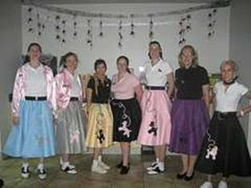
39. In the 50's rock and roll started big teen styles
for the first time.
40. Everyone went to a Bar Mitzvah even if
you weren't Jewish.
41. Everyone took their date to Plum Beach for
the submarine races.
42. There were 3 main nationalities in
Brooklyn in the 50's: Italians, Irish and Jewish. Then there was a sprinkling of
everyone else. The Scandinavians and Greeks in Bay Ridge, the African Americans
in
Bedford Stuyvesant and the Polish of Green Point
43. The only way to get to Staten Island was by ferry from the
67th Street pier in Brooklyn. It was a great ride in the summer time for a
dime.
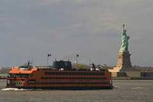
44. In
Brooklyn, a fire hydrant is a "Johnny pump."
45. Rides on a truck
came to your neighborhood to give little kids a
ride for a dime. The
best one was the "whip," which spun you around a track. 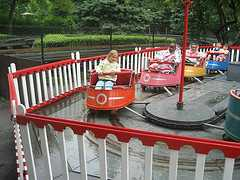You got a
little prize when you got off, sometimes a folding paper fan, sometimes a straw
tube that you inserted two fingers into, that tightened asyou tried to pull your
fingers out again.
46. As a kid you hit people with water balloons
from atop a building,
you shot linoleum projectiles from a carpet gun,
you shot dried peas
from pea shooters, and you shot paperclips at
people with a rubber band. C3?C2
47. You shopped at EJ Korvettes,
Robert Hall, Woolworth's, Mays,
McCrory's, Packers, A&P, Bohack,
A&S. Barney's was Barney's Boys Town
back then,and not a luxury
store. You bought your shoes at National and Mile s, A S Beck. When you got
married you bought your dishes at Fortunoff's under the"el".
48.
NBC main production studio was on Avenue M.and E.16 St. The Cosby show was made
there.
49 Everybody lived near a candy store and a grocery store.
50. The first mall comes to Brooklyn at Kings Plaza.
51. Bagel stores start popping up everywhere in the
60's.
52. Went to Jahn's Ice Cream Parlor with a big group and had
the "Kitchen Sink." If it was your birthday (you had to bring your birth
certificate),you could get a sundae free. 

53. Everybody knew somebody who was a connected
guy.
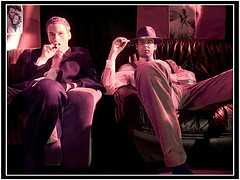
54. We
used the word "swell"; that's pass=C3?=C2=A9 today.
55. In the
summer we all waited for the Good Humor, Bungalow Bar, Mister
Softee
or Freezer Fresh man to come into our neighborhood to buy ice
cream.
In the early to mid 50's, the Good Humor man pushed a cart 
instead of driving a truck. Remember the bells? A pop was 15
cen ts. A large cup was 15 cents, a small cup was a dime And a sundae --
remember
licking the chocolate off the back of the cardboard top? --
was a quarter.
(Movie stars pictures on bottom of the Dixie cup
lids).
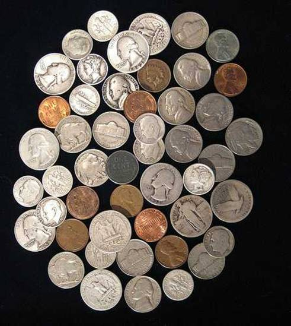As a kid
growing up in the 1950s we would spend our money on bubble gum baseball cards,
candy and ice cream. A pack of baseball cards (complete with a stick of bubble
gum) and full-size candy bars were 5 cents each or six for a quarter. In the
summer the In those days there were lots of interesting coins still in
circulation. Dimes and quarters we still made of silver. The oldest
Roosevelt dimes were not yet 15 years old. It was not uncommon to find Mercury
dimes or worn out Standing Liberty quarters; and Buffalo or Indian Head nickels
were common too. Most pennies were wheat-backs; they didn't get the familiar
Lincoln Memorial on the reverse until 1959. With luck it was even possible to
find an occasional Indian Head penny in your change. But the most coveted find
(for us kids, anyway) was the unusual 1943 steel penny.
56.
Many of us would sneak cigarettes and hide them when we got
home.
57. When we talked about "the city" everyone knew we
meant,Manhattan.
58. The Mets in the 60's became our substitute
for the Dodgers. But they never did, and never will, make up for the Dodgers
leaving.
59. In the 60's we were ready to drive and hit the night
life scene. With the car came the girls.
60. We are all in a
select club because we have roots in BROOKLYN.